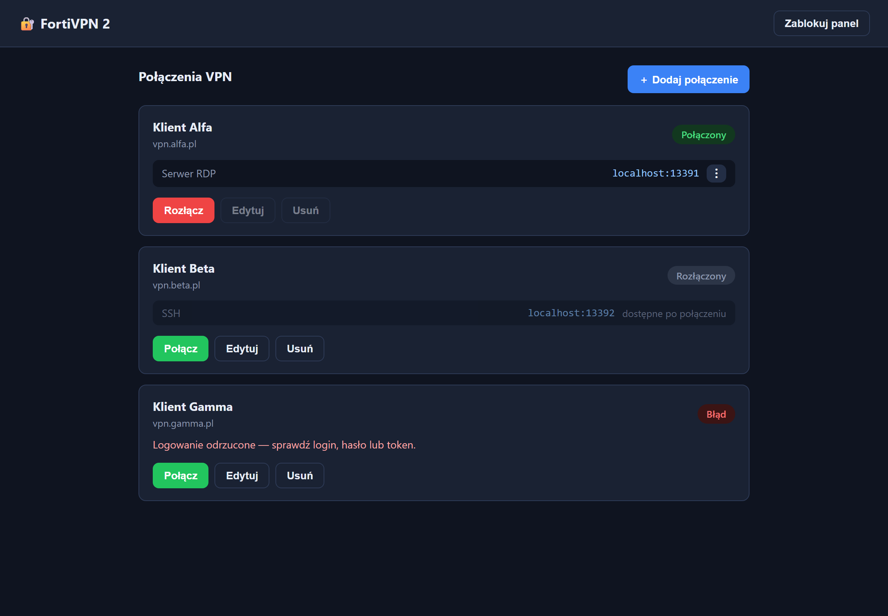
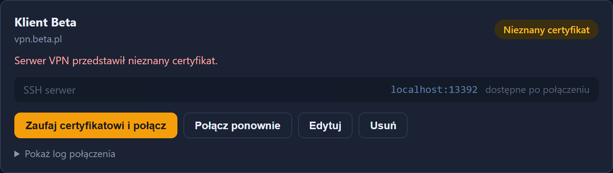
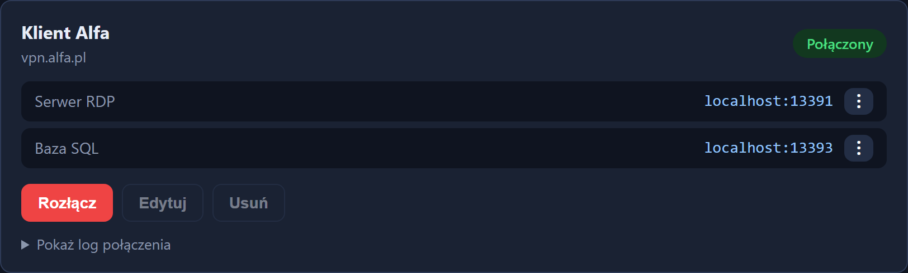

Forti SSL-VPN and IPsec tunnels run inside a container and are driven from a page in your browser. The machines behind them answer at a local address, so you connect with the RDP or SSH client you already have.
Your own network stays out of it. Nothing to install but Docker.

Latest release: checking…
Unpack the archive and run start.bat, or start.sh
away from Windows. The Docker image is inside, so the first start loads it
from the file: nothing is built and nothing is pulled from a registry.
It needs Docker Desktop running, and nothing else. Most of the archive is the image itself, which is why it is large; once it is loaded the panel works with no internet beyond Docker.
The panel is in Polish. It opens at
http://fortivpn.localhost:25263 and keeps running in the
background with Docker, so there is no terminal to leave open.
A tunnel per client, each in its own network namespace, and a local address for every machine you need to reach.
Forti SSL-VPN, and IPsec for FortiGate dial-up: IKEv1 with a shared key and XAuth, IKEv1 or IKEv2 on the key alone. A FortiToken is appended to the password, which is how XAuth takes it.
Every connection lives in its own network namespace, so two clients using the same address ranges do not collide. SSL-VPN and IPsec mix freely.
Each forwarded port gets its own loopback address, 13391 on
127.0.0.2 and so on. Windows files RDP credentials under
the address without the port, so one shared localhost would
have machines overwriting each other's passwords.
The first connection usually presents a certificate the panel has not seen. It offers to trust it and carry on, instead of asking you to copy hashes between files.
Each machine shows something like 127.0.0.3:13392 with a
copy button. That goes straight into an RDP or SSH client; nothing about
the tunnel is its concern.
A refused login, a tunnel that dropped, a machine that is not answering yet: the connection card carries the reason in words rather than a log to read.
The two moments that usually cost the most time.


Credentials for someone else's network deserve more care than a text file.
One master password unlocks the panel, and everything saved sits encrypted under it with scrypt and AES-256-GCM. It cannot be recovered, which is the point, so it is worth remembering.
The panel and every forwarded port listen on the loopback range and nowhere else. Nothing on your network can reach a tunnel you opened.
The tunnel is established inside the container, not in your operating system's routing. Your machine does not join the client's network; it only talks to the forwards you asked for.